1과목: 교통계획
1. 주차수요 추정방법에 대한 설명으로 틀린 것은?
2. 화물교통조사 시 조사항목이 아닌 것은?
3. 다음 도로의 운영 방법 중 도로구간을 홀수차로로 구획하고 중앙의 한 개 차로를 좌회전 교통류로 처리하여 회전교통류에 의해 직진교통류가 방해받음으로써 발생하는 링크 및 교차로의 용량저하현상을 감소시키는 효과가 있는 것은?
4. 다음 중 대중교통 수단 운영에 따른 장점으로 가장 거리가 먼 것은?
5. 세부가로 교통량 추정에 앞서 개략적 노선 수요 파악을 위한 네트워크로서 주로 교통존 중심(Zone Centroid)간을 연결하는 많은 삼각형으로 구성하는 네트워크는?
6. 두 지역을 연결하는 도로 A, B가 있다. 두 도로의 승용차 통행비용함수가 다음과 같을 때 Wardrop의 제1법칙에 의한 두 도로 간 통행배정(배분)량이 모두 옳은 것은?
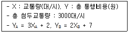
7. 교통수요예측기법을 집계형 모형과 비집계형 모형으로 분류할 때, 집계형 모형이 설명하려고 하는 변수는?
8. 교통사업의 경제성 분석 시의 고려사항 중 공공자원의 사회적 기회 비용을 의미하는 것은?
9. 지능형교통체제의 적용 분야가 아닌 것은?
10. 다음 교통계획 대안평가 방법 중 성적이 다른 하나는?
11. 통행배정 방법 중 용량제약(Capacity Constaint) 방식을 사용하지 않는 것은?
12. 통행발생모형 중 다중회귀분석모형의 도출과정에 대한 설명으로 틀린 것은?
13. 다음 중 교통의 3대 요소로 가장 거리가 먼 것은?
14. 순현재 가치(NPV)분석법에 대한 설명이 틀린 것은?
15. 다음 중 다른 교통수단과 비교하여 지하철이 갖는 장점으로 가장 거리가 먼 것은?
16. 여객통행 기·종점(O/D)조사의 주된 목적은?
17. 일반적인 도시교통의 특성으로 틀린 것은?
18. 교통존의 설정에 대한 설명으로 틀린 것은?
19. 다음 중 장기교통계획에 비해 교통체계관리기법(TSM)이 갖는 특징으로 틀린 것은?
20. 둘 이상의 기능을 합한 복합교통 시스템으로서, 자동차에 사람이나 화물을 실은 채 철도로 운반 하는 시스템은?
2과목: 교통공학
21. 지점 속도의 빈도 분포에 관한 설명으로 옳지 않은 것은?
22. 밀도가 70대/km, 공간평균속도가 35km/h일 때 교통량은/
23. 한 접근로에서 2가시(A, B) 상태의 교통류가 관측되었다. A상태의 교통류는 200대/시의 교통량과 160대/km의 밀도를 가지며, B상태의 교통류는 350대/시의 교통량과 260대/km의 밀도를 가질 때, 두 교통류에서 발생하는 충격파의 속도는?
24. 신호교차로 용량분석의 이상적인 조건으로 옳지 않은 것은?
25. 어느 대기행렬시스템 특성을 「M/D/1」으로 표현한 경우, 이 시스템에 대한 설명으로 옳은 것은?
26. 교통류 차두시간 및 차량도착 특성의 확률분포에 대한 설명으로 옳지 않은 것은?
27. 아래 고속도로 기본구간의 용어에 대한 설명 중 ㉠, ㉡에 들어갈 말로 알맞은 것은?
28. 5분 동안 어느 지점을 통과하는 차량 10대의 속도를 측정한 결과가 아래와 같을 대 공간 평균 속도는?
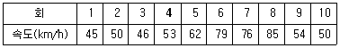
29. 가변차로제에 대한 설명으로 옳은 것은?
30. 황색신호 시간 길이의 결정에 관계없는 것은?
31. 시공도(Time-Space Diagram)에서 확인할 수 없는 사항은?
32. 통행시간 및 지체조사 방법으로 성격이 다른 하나는?
33. 차량이 움직이는 과정에서 발생하는 저항에 대한 설명으로 옳지 않은 것은?
34. 고속도로의 엇갈림 구간에 대한 설명으로 옳지 않은 것은?
35. 일반적인 차량추종모형에서 입력 값으로 고려되지 않는 변수는?
36. 차량 운행 중 외부자극에 대한 인간의 신체적 반응 과정인 PIEV 과정에 속하지 않는 것은?
37. 승용차환산계수(PCE)에 대한 설명으로 옳은 것은?
38. 교통량(q), 속도(u), 밀도(k)의 상관관계(q=u×k)에서 속도의 의미는?
39. 아래와 같은 [조건]에서 지방부 2차로 도로의 어떤 구간에서의 지점 속도를 조사할 때 필요한 최소 표본의 수는?
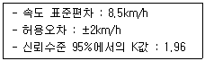
40. 아래 [조건]에서의 유효녹색시간은?
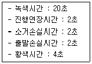
3과목: 교통시설
41. 평면교차로 설계의 기본원리로 틀린 것은?
42. 다음 중 1대당 최소 주차 소요 면적이 가장 큰 각도 주치 형식은? (단, 차종은 경형을 기준으로 하며 전진주차 방식이다.)
43. 아래의 설명에 해당하는 회전교차로의 기하구조 구성요소는?
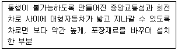
44. 보도의 유효폭 기준이 옳은 것은? (단, 지방지역의 도로와 도시지역의 국지도로 중 지형상 불가능하거나 기존 도로의 증설·개설 시 불가피하다고 인정되는 경우는 고려하지 않는다.)
45. 곡선도로에 설치하는 완화곡선의 종류 중 일반적으로 이용되는 클로소이드 곡선의 기본식이 옳은 것은? (단, A : 클로소이드 곡선의 파라미터, L : 클로소이드 곡선의 길이, R : 단곡선의 곡선반경)
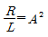
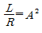
46. 설계속도가 80km/h인 평지 도로에서 노면과 타이어의 마찰계수가 0.27일 때, 최소 정지시거는? (단, 운전자 반응시간은 2.5초이다.)
47. 각도주차 방식에 비하여 평행주차 방식이 갖는 특징으로 옳은 것은?
48. 고속도로의 설계속도가 100km/h일 때, 버스 정류장의 최소 길이 기준으로 옳은 것은?
49. 다른 도로와의 연결허가 금지구간 기준이 옳지 않은 것은?
50. 설계속도에 대한 설명으로 틀린 것은?
51. 설계속도가 80km/h인 곡선부에서 횡방향 미끄럼마찰계수가 0.12, 편경사가 6%인 구간에 적용할 수 있는 최소 평면곡선 반지름은?
52. 지방지역 고속국도의 평지(㉠) 및 산지(㉡)의 설계속도는 최소 얼마 이상으로 하는가?
53. 교통사고를 방지하기 위하여 필요하다고 인정하는 경우에 설치하는 도로안전시설로 가장 거리가 먼 것은?
54. 네 갈래 교차 인터체인지의 대표적 형식 중 용지가 적게 들고 교통의 우회거리도 짧아 경제적이지만 접속 도로와의 연결로 접속부분에서 생기는 교차부의 도로 교통 용량이 작아지는 단점이 있는 불완전 입체교차형은?
55. 다음과 같은 특징을 갖는 시거는?
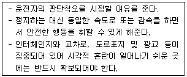
56. 교통의 안전과 소통의 원활을 도모하기 위해 설치하는 도로교통정보 안내 시설에 관한 설명으로 틀린 것은?
57. 측도에 대한 설명으로 틀린 것은?
58. 중앙분리대의 기능에 관한 설명으로 틀린 것은?
59. 도로의 기능과 이동성 및 접근성과의 관계를 나타낸 그림에서 ㉡에 해당하는 도로는?
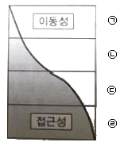
60. 길이 1천m 이상의 터널 또는 지하차도에서 오른쪽 길어깨의 폭을 얼마 미만으로 하는 경우에 최소 750m 간격으로 비상주차대를 설치하여야 하는가?
4과목: 도시계획개론
61. 기후변화에 대응한 저탄소 도시 조성을 위한 도시관리정책 수단으로 가장 거리가 먼 것은?
62. 수도권의 인구와 산업을 적정하게 배치하기 위하여 구분한 권역에 해당하지 않는 것은?
63. 하워드(E.Howard)가 제시한 전원도시의 조건에 해당하지 않는 것은?
64. 다음과 같은 특징을 갖는 국지도로 형태는?
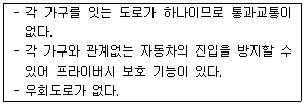
65. 도시계획의 역사에 관한 설명으로 틀린 것은?
66. 도시·군계획 시설의 결정·구조 및 설치기준에 관한 규칙에 따른 용도지역별 도로율 기준이 틀린 것은?(오류 신고가 접수된 문제입니다. 반드시 정답과 해설을 확인하시기 바랍니다.)
67. 일반적으로 인구의 U-Turn 현상으로 설명되고 있는 개념은?
68. 개발밀도관리구역의 지정기준이 틀린 것은?
69. 수출기반모형에 대한 설명이 틀린 것은?
70. 다음과 가장 관련이 깊은 도시구성형태는?
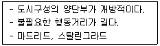
71. 대중교통지향개발(TOD)에 대한 설명으로 적합하지 않은 것은?
72. 특별시·광역시·특별자치시·특별자치도·시 또는 군의 관할 구역에 대하여 기본적인 공간 구조와 장기발전방향을 제시하는 종합계획으로서 도시·군 관리계획 수립의 지침이 되는 계획은?
73. 계획이론과 그 내용이 옳은 것은?
74. 인구 100만 이상의 대도시 계획에 적합하며, 횡적인 연결은 환상선으로, 도심부와 교외 및 외곽은 방사선으로 연결하는 형태로 도쿄, 파리가 대표적인 가로망 구성 형태는?
75. 도시토지이용의 예측 모형인 라우리모형(Lowry Model)에서 공간구조를 분류하는 항목에 해당하지 않는 것은?
76. 현재 인구가 50만 명인 도시가 있다. 과거 인구추세에 의한 평균 인구증가율이 3%일 때, 등비급수법에 의해 추정한 20년 후의 인구는?
77. 다음 중 도시·군관리계획에 해당하지 않는 것은?
78. 도시계획과정에서 비용편익분석 또는 비용효과분석을 시행하는 단계는?
79. 공동구에 관한 설명으로 틀린 것은?
80. 도시·군계획시설로서 국지도로에 대한 정의가 옳은 것은?
5과목: 교통관계법규
81. 대중교통의 육성 및 이용촉진에 관한 법률의 정의에 따른 ‘간선급행버스체계’의 구성요소에 포함되지 않는 것은?
82. 도로교통법령상 모든 차의 운전자가 다른 차를 앞지르지 못하는 장소에 해당하는 것은? (단, 지방경찰청장이 필요하다고 인정하여 안전표지로 지정한 곳은 고려하지 않는다.)
83. 신호등의 성능 기준에 관한 아래의 설명에서 ( )안의 내용이 모두 옳은 것은?
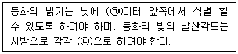
84. 도시교통정비 촉진법령상 도시교통정비지역에서 기본계획·중기계획 및 시행계획과 조화를 이루도록 하여야 하는 계획으로 규정되어 있지 않은 것은?
85. 도로법상 도로관리청은 소관 도로의 경계선에서 얼마를 초과하지 아니하는 범위에서 접도구역을 지정할 수 있는가? (단, 고속국도의 경우는 제외한다.)
86. 국가통합교통체계효율화법상 타당성 평가서를 작성하는 평가 대행자의 준수사항으로 틀린 것은?
87. 도로법령상 도로와 다른 시설의 교차 방법에 관한 아래 내용에서 ( )에 들어갈 내용으로 옳은 것은?
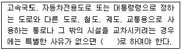
88. 교통안전에 관한 국가 또는 지방자치단체의 의무·추진체계 및 시책 등을 규정하고 이를 종합적·계획적으로 추진함으로써 교통안전증진에 이바지함을 목적으로 하는 법은?
89. 대도시권 광역교통에 관한 업무를 수행하기 위하여 국토교통부 소속으로 두는 대도시권광역교통위원회의 소관 업무가 아닌 것은? (단, 그 밖에 광역교통위원회가 필요하다고 인정하는 사항은 고려하지 않는다.)
90. 국가통합교통체계효율화법에서 하나 또는 둘 이상의 교통수단을 이용하여 대규모 여객 또는 화물의 연계운송·환승·환적·하역·보관 등 주요 교통물류활동이 이루어지고 있는 공항·항만·철도역·터미널·산업단지 등 주요 근거지를 뜻하는 것은?
91. 국토교통부장관은 몇 년의 범위에서 교통 분야별 지능형교통체계의 계획을 수립하여야 하는가?
92. 도시교통정비 기본계획의 시행 및 도시교통개선에 필요한 재원을 확보하고, 효율적으로 운용·관리하기 위하여 설치하는 지방도시 교통사업특별회계의 세입원이 아닌 것은? (단, 그 밖에 도시교통과 관련한 수입은 고려하지 않는다.)
93. 주차장법상 용어의 정의가 틀린 것은?
94. 국가교통안전기본계획의 원칙적인 수립권자와 수립기간 기준이 모두 옳은 것은?
95. 주차장법상 노외주차장인 주차전용건축물의 건축 제한 기준이 틀린 것은?
96. 기계식주차장의 설치기준에 관하여 아래 ( )에 공통으로 들어갈 내용이 옳은 것은?
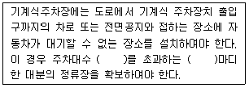
97. 대중교통을 체계적으로 육성·지원하고 국민의 대중교통수단 이용을 촉진하기 위하여 필요한 사항을 규정함으로써 국민의 교통편의와 교통체계의 효율성을 증진함을 목적으로 하는 법률은?
98. 도로교통법규상 안전표지의 종류를 모두 옳게 나열한 것은?
99. 도시교통정비 촉진법에 따라 도시교통정비 기본계획 수립을 위해 실시하는 기초조사의 내용에 포함되지 않는 것은?
100. 도로법상 정의하는 ‘도로의 부속물’중 도로이용지원시설에 해당하지 않는 것은?
6과목: 교통안전
101. 야간사고가 많이 발생하는 지점에 대한 개선대책으로 가장 거리가 먼 것은?
102. 상층조사(conflict studies)의 목적으로 거리가 먼 것은?
103. 교통사고 자료 수집 시 일반적인 고려사항으로 가장 거리가 먼 것은?
104. 교통사고의 발생요인인 운전자에 관한 설명으로 틀린 것은?
1⑤. 과속방지턱의 주요 설치 목적이 아닌 것은?
106. 평균사고율이 3.5건/MVK이고 분석기간동안이 구간의 사고율이 4.1MVK/백만차량·km일 때, 95% 신뢰수준이 한계사고율은 약 얼마인가?
107. 자동차가 주행할 때 타이어의 공기압이 적은 상태이면 타이어 접지면이 압축되어 변형하면서 회전하여 타이어가 물결치는 모양이 되는 현상은?
108. 높은 사고발생빈도를 갖는 지점의 다음 해의 사고 발생빈도를 측정해보면 그 전년에 비해 낮게 나타난다. 이것은 교통사고가 가장 많이 발생한 해에 그 지점이 사고다발지점으로 선정되고, 어느 지점의 사고발생률이 매년 높아졌다 낮아졌다하는 변화를 하기 때문인데 이러한 현상을 무엇이라고 하는가?
109. 도로표지의 설치기준에 대한 설명으로 옳지 않은 것은?
110. 교차로의 노면이 미꺼러워 발생하는 사고를 개선하기 위한 방법으로 틀린 것은?
111. 요 마크(yaw mark)를 이용한 차량의 제동 시속 속도 추정에서 이용하는 요소가 아닌 것은?
112. 교통사고분석 중 가장 단순하고 직접적인 방법으로서 교통량이 적은 지방부 도로에 효과적이고, 교통량의 많고 적음에 따른 요인을 고려하지 않는 분석 방법은?
113. 교통사고 유발요인을 인적 요인, 차량 요인, 환경적 요인으로구분할 때, 다음 중 환경적 요인에 해당하지 않는 것은?
114. 연평균 5건의 교통사고가 발생하는 교차로에 1년 동안 3건 이상의 교통사고가 발생할 확률은? (단, 일정 기간 동안 교통사고가 발생할 확률은 포아송 분포를 따른다고 가정한다.)
115. 차량이 도로를 벗어나 도로의 맨 끝으로부터 거리 30m, 높이 20m의 지점에 추락하였다면 추락할 때의 이 차량의 속도는 얼마인가?
116. 사고의 많은 요인들 중 하나라도 없다면 연쇄반응은 없으며, 교통사고도 일어나지 않을 것이라고 하는 원리는?
117. 어두운 터널에서 바깥의 밝은 곳으로 나올 때 잠시 눈이 부셨다가 곧 회복되는 반응은?
118. 교통안전법 시행령상 교통행정기관이 교통시설안전진단을 받을 것을 명할 때에는 교통시설안전 진단을 받아야 하는 날부터 며칠 전까지 교통시설설치·관리자에게 이를 통보하여야 하는가? (단, 긴급하게 교통시설안전진단을 받을 필요가 있다고 인정되는 경우는 고려하지 않는다.)
119. 어느 차량이 평탄한 도로를 주행하다 급정거하여 충돌 없이 정지하였다. 이 차량은 연속적으로 두 번의 스키드마크를 남겼다. 첫 번째 스키드마크의 길이가 20m, 차량의 제동직전 주행속도가 80km/h이었을 때, 두 번째 스키드마크의 길이는 약 얼마인가? (단, 타이어와 노면의 마찰계수는 0.7이다.)
120. 도로교통안전을 강화하기 위해 사용하는 3E에 포함되지 않는 것은?